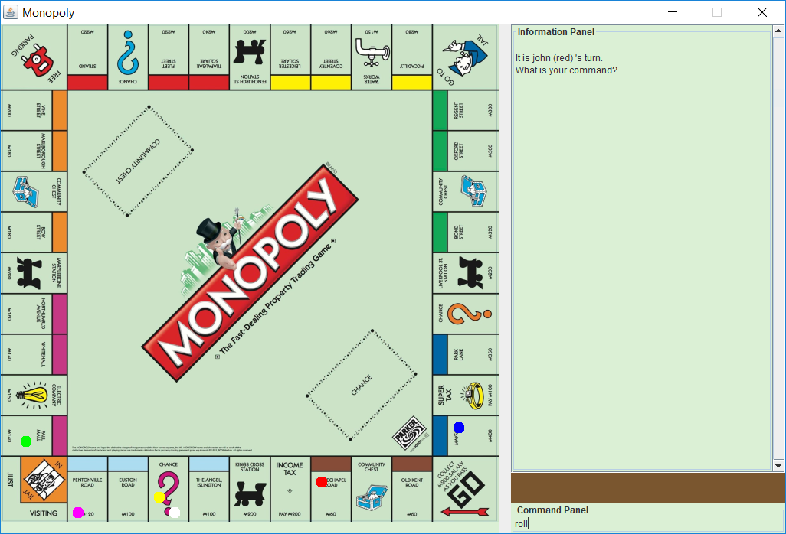
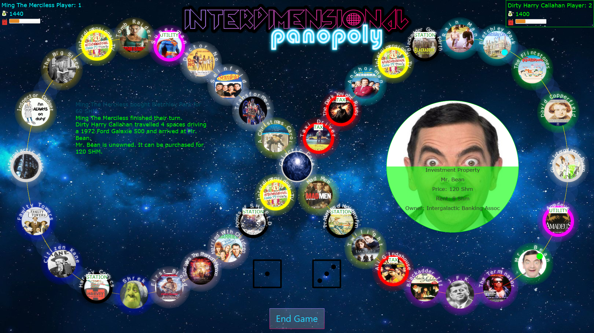

-
Leaving Certificate / Secondary Education - Points: 545
- Maths
- Technical Graphics
- Physics
- Applied Mathematics
- Accounting
- English
- French
- Irish
-
University - Current GPA: 3.83 (1st Class Honours)
- Program Construction 1
- Introduction to AI
- Networks + Internet Systems
- Object-Oriented Programming
- Graphs + Networks
- Processor Design
- Web Design
- Foundations of Computing
- Software Engineering Project 3
- Computer Graphics
- Information Theory
- Data Structures and Algorithms
- Databases and Information Systems
- Discrete Maths for Comp Sci
- Introduction to Java
- Data Structures and Algorithms
- Software Engineering Project 2
- Intro to Operating Systems
- Intro to Functional Programming
- Linear Algebra 3
Stage 3
Stage 2
Software Developer
Andrew Fitzgerald andrew.fitzgerald@ucdconnect.ieHello, I'm Andy. I have just complete year three of my computer science degree in University College Dublin. I am starting out my software development career and I am currently seeking an internship.
Resume
Education
Projects
-
College Projects
-
Monopoly
In stage 2 of computer science I completed a module called Software Engineering project 2. In this module we were tasked with developing the board game, Monopoly. This was undertaken as part of a team of 3. This module emphasised the use of agile development, Scrum framework and git version control.
- Java
- Swing
- 2D Graphics
- GUI Design
- Git
- Agile Development
- Scrum Framework
Monopoly Bot
We also developed a bot which could play monopoly against other players and other bots.
-
Interdimensional Panopoly
This year I completed a module called Software Engineering Project 3. The main component of this module was to design and implement a procedurally generated version of the classic borad game: Monopoly.This project was undertaken as part of a team of 4. I learned a great deal about agile developement and software design patterns during this module. Our resulting software project consisted of a desktop application, a server application and an android application. The desktop application provided a view of the board, the android application provided input for each player and the server was in charge of the game logic and communicating between the Desktop and the android applications. Our server ran on AWS. We utilised a database to procedurally generate our game content.
- Java + JavaFX + FXML
- CSS
- Networking
- 2D Graphics
- GUI Design
- Procedural generation
- Threading
- JSON
- AWS
- Database
- SQL
- Agile Developement
- Software Design Patterns
- Git version control
-
-
Self Motivated Projects
-
Floatilla
Last summer I started developing a game in unity. I learned a great deal about game develepment, 3D game physics, graphics, C# and blender. The game is set in a world which is flooding.The player must survive by building a boat and scavenging the ocean for resourcers. The enviroment is continuously changing as more of the world becomes submerged.

- C#
- Unity
- Threading
- 3D Graphics
- 3D Physics
- Animation
- Blender
-
A* Pathfinding
I recently created a JavaFX application which demonstrates the A* pathfinding algorithm in action. It is written in java using the JavaFX UI library. It shows the constuction of a path between two points in a grid maze.
- Java + JavaFX
- AI
- 2D Graphics
-
Raspberri PI
I've spent some time creating small raspberri PI projects. These projects involved both hardware and software. Here is an example where I implemented an ultrasound sensor to detect obstacles in proximaty:
- C
- Hardware
- Circuit Design
-
Skills
| Introduced | Familier | Comfortable | Confident | Mastered | |
|---|---|---|---|---|---|
| Java | |||||
| C++ | |||||
| C | |||||
| C# | |||||
| Ruby | |||||
| SQL | |||||
| Lisp | |||||
| CSS | |||||
| HTML | |||||
| Javascript | |||||
| PHP | |||||
| Git | |||||
| Unity |
Other Noteworthy things
Oyster Farming
Since the age of thirteen I have worked on a family owned oyster farm. This is a very physical and demanding Job. It has given me a strong work ethic.
Sailing Intructor
One of my passions is sailing. At the age of 16 I became a fully qualified sailing instructor.
-
For 4 summers between 2010 and 2013 I worked as a sailing instructor in Mayo Sailing club.
- Looking after Safety of a group of children.
- Designing and implementing lessons.
- Communication
-
For 3 summers between 2014 amd 2017 I worked in America as a keelboat sailing instuctor for Nantucket Community Sailing.
- Looking after Safety of a group of children.
- Designing and implementing lessons.
- Communication
- Maintenance of two 34 foot J105 keelboats
- Chartering / liaisoning private charters